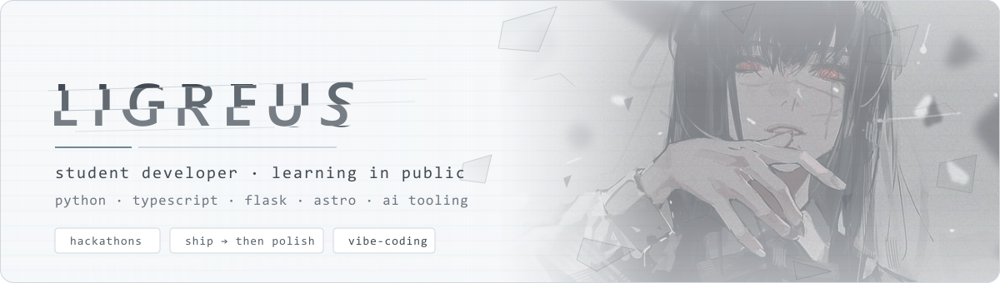
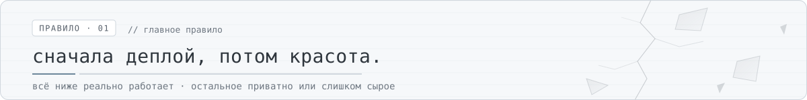

notabenePublic
Полнотекстовый поиск по своим заметкам из терминала или вкладки браузера. Ранжирование BM25 написано вручную, стемминг для русского и английского, поиск по фразе — один файл SQLite и ноль зависимостей.

Я студент и учусь разработке, выпуская проекты: небольшие веб-приложения, инструменты с ИИ и прототипы с хакатонов. У каждого появляется публичная ссылка раньше, чем красивый код.

Нашли что-то полезное или нужен ещё один человек в команду на хакатон? Откройте issue в любом репозитории или напишите на почту.
Почти всё здесь начиналось как идея на выходные, учебная задача или прототип с хакатона, и каждый проект чему-то научил, даже если не выжил. Рабочая публичная ссылка в первый день полезнее идеального кода, который никто не может открыть.
Полнотекстовый поиск по своим заметкам из терминала или вкладки браузера. Ранжирование BM25 написано вручную, стемминг для русского и английского, поиск по фразе — один файл SQLite и ноль зависимостей.
Пишешь отчёт по лабе в Markdown — получаешь DOCX по ГОСТ 7.32-2017: нумерация рисунков и таблиц, содержание, Word не нужен.
Предварительный опрос пациента: семь вопросов превращаются в карточку для врача с категорией срочности и правилами тревожных признаков.
Поиск аналогов лекарств: по названию с упаковки находит взаимозаменяемые препараты, считает цену за курс и запрещает замену там, где правила считают её опасной.
Открытый справочник по Genshin Impact: билды, команды, база персонажей, трекер круток и проверка команды для Бездны под текущую ротацию.
Трекер здоровья: записи, графики и аналитика, бэкенд на Flask и фронтенд на React.
Приложение с ИИ вокруг энергетики: раздельные фронт и бэк, общий контракт API, Docker Compose.
Хостинг на бесплатном плане Render засыпает после 15 минут простоя — первая загрузка живой версии занимает до минуты.
Всегда посреди какого-нибудь проекта — напиши, если что-то отсюда пригодилось.